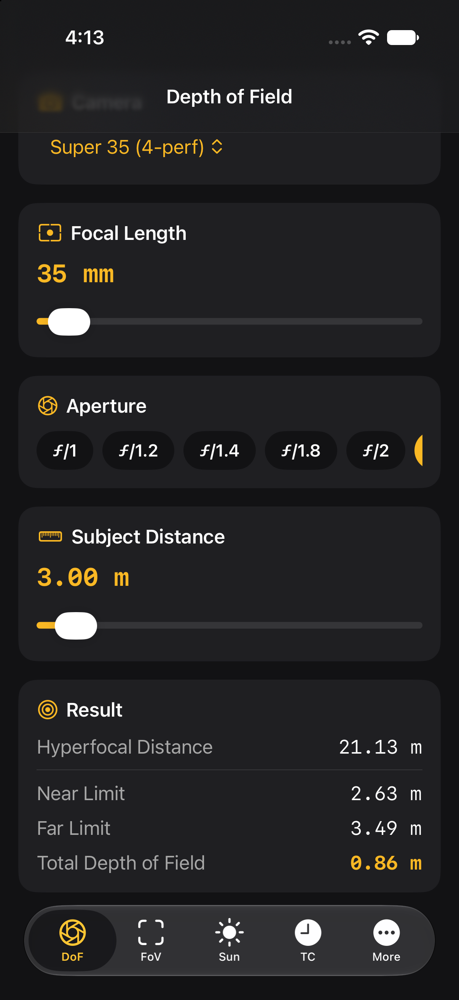
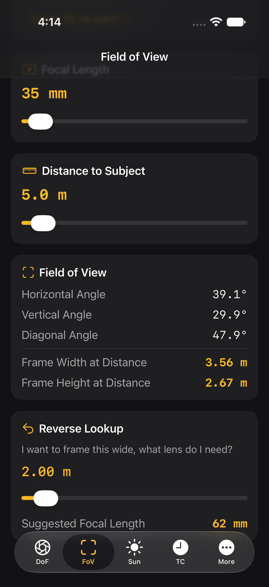
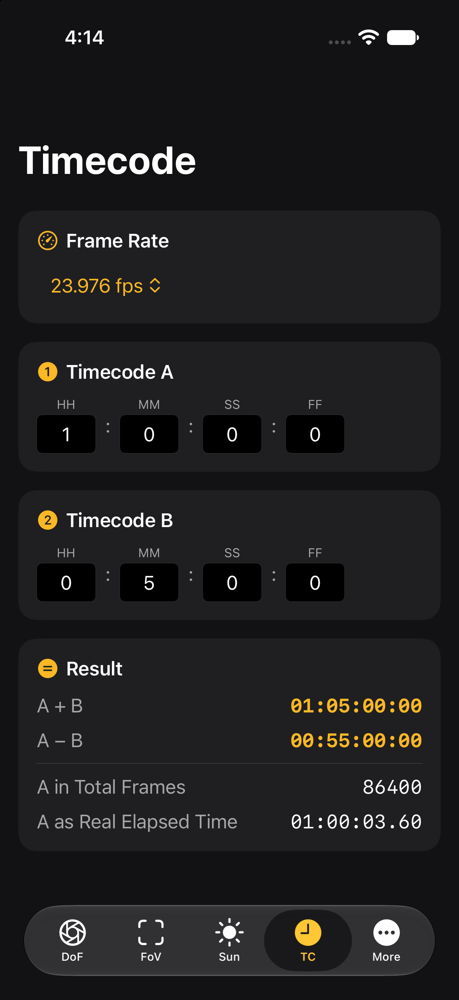
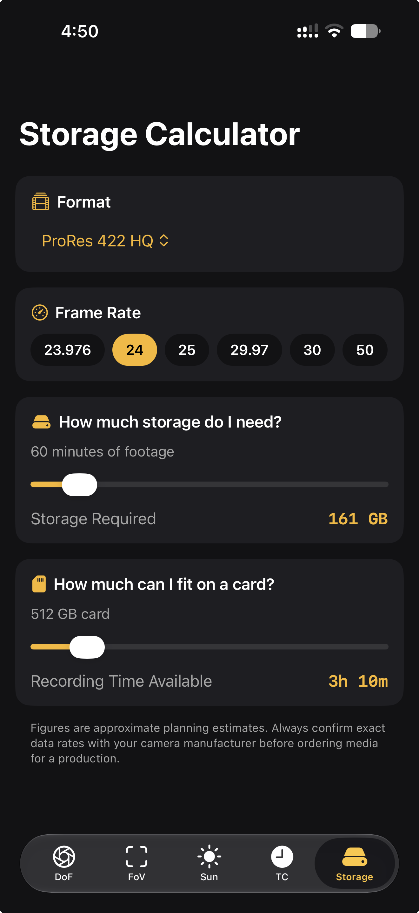

Depth of Field
Calculate hyperfocal distance, near and far focus limits, and total depth of field based on focal length, aperture, distance, and sensor size. Know exactly what's sharp before you roll.
DoP Toolkit is the essential calculator suite for cinematographers, camera operators, and filmmakers. Instantly calculate depth of field, field of view, timecode mathematics, storage requirements, and golden hour timing - all in one professional app.

Features
Scouting locations, planning shots, managing media, or timing a shooting day around the sun: DoP Toolkit covers the calculations for each one.
Calculate hyperfocal distance, near and far focus limits, and total depth of field based on focal length, aperture, distance, and sensor size. Know exactly what's sharp before you roll.
Instantly see horizontal, vertical, and diagonal angles, frame dimensions at any distance, plus reverse lookup to find the lens you need.
Accurate sunrise, sunset, golden hour, and blue hour calculations for any location and date - perfect for planning shoots around natural light.
Add, subtract, and convert timecode with support for drop-frame formats and frame-accurate calculations.
Calculate media requirements for any codec at any frame rate and duration, so you never run out of cards mid-shoot.
Preset profiles for major cinema and mirrorless cameras from RED, ARRI, Sony, Canon and more, with full custom sensor support.
Sensor Support
Every calculation is only as good as the sensor data behind it. DoP Toolkit ships with accurate preset profiles for the cameras working DoPs actually use, plus full custom sensor support for anything else.
See It In Action




What You Get
Ideal For
Who need fast, reliable calculations for depth of field, focus and light while planning and shooting.
Pulling focus and building shot lists, with hyperfocal distance and framing math always to hand.
Timing shoot days around golden hour and blue hour, and planning storage needs before the crew arrives.